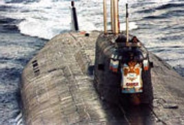

|
SPIEGEL
ONLINE
Schneller wissen, was los ist
HOME
- POLITIK
- WIRTSCHAFT
- NETZWELT
- PANORAMA
- KULTUR
- WISSENSCHAFT
- SPORT
- AUTO
- REISE
|
texto
DIENSTAG, 15.AUGUST2000
|
GESUNKENESATOM-U-BOOT
Colisão com segundo submarino?
No Oceano Ártico, um submarino nuclear russo afundou 150 metros no fundo do mar de Barents. Existem 107 homens a bordo - não está claro se eles podem ser salvos. A Marinha Russa suspeita que o "Kursk" tenha caído após colisão com um submarino estrangeiro. mais...
A classe Antej: reatores nucleares incomumente fortes
Crônica: Acidentes graves envolvendo submarinos nucleares
Gronelândia: medo de perder bomba atômica
|
|
POLITIK >>
Dez anos de unidade alemã: Kohl não camparece à cerimônia oficial
O ex-chanceler não gosta que isso seja decidido: há semanas havia uma disputa sobre se Helmut Kohl estava discursando na celebração central do décimo dia da unidade alemã ou apenas ouvindo deveria ser. Agora o ex-chanceler tomou a inciativa - e imediatamente cancelou o convite para o ato do estado Dresden.
Veredicto: sentenças de prisão para promotores da RDA Congresso do
Partido: Eleitoral: Democratas explodem em perseguição
|
|
|